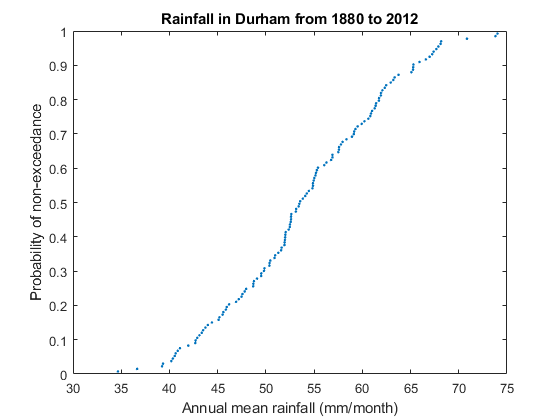
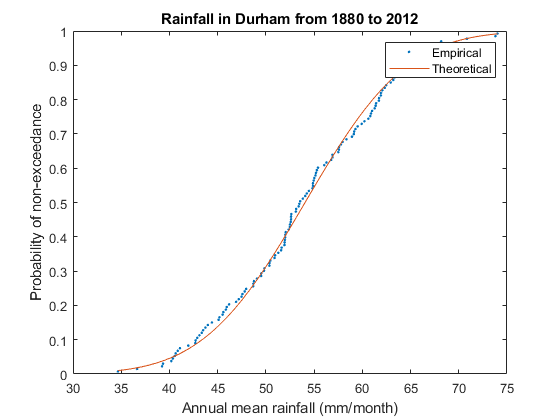

MATLAB Notes: Session 3 - Using subfunctions
Simon Mathias
Department of Engineering
Durham University
Contents
Learning outcomes
At the end of the session you should be able to:
- Construct and interpret a cumulative distribution plot.
- Rank data using sort.
- Organise a script file using subfunctions.
- Save and load data in mat files.
Cumulative distribution functions
In the last two weeks we have been learning how to import and manipulate data from excel spreadsheets. We have also applied some basic statistical procedures. This week we will develop our code further to develop a a probabilistic analysis of the Durham weather dataset. In this way, we will be applying similar techniques to different variables of interest. Application of subfunctions will make the task much easier.
But first, we will introduce some basic probability theory:
Consider a set of 5 measurements of a given variable, xn
%----------- % n xn %----------- % 1 35 % 2 27 % 3 30 % 4 10 % 5 25 %------------
If we rank these from small to large we get:
%----------- % m xm %----------- % 1 10 % 2 25 % 3 27 % 4 30 % 5 35 %------------
The probability of not exceeding a value, xm, in the future, P, can be estimated from the so-called Weibull plotting position:
P = m / (N+1)
where m is the associated rank number of the value, xm, and N is the number of values of x that have been previously observed.
For the table above we can therefore say:
%----------------------------- % m xm P %----------------------------- % 1 10 1/6 = 0.17 % 2 25 2/6 = 0.33 % 3 27 3/6 = 0.50 % 4 30 4/6 = 0.67 % 5 35 5/6 = 0.83 %-----------------------------
Note that the need to add 1 to N is a way of avoiding the idea that it is impossible to exceed the largest value that has been previously observed.
The above table represents a discrete set of points from the so-called cumulative distribution function (CDF) of the data.
Open MATLAB.
Click on "File", "New", "Script". The "Editor" window should now appear. Save the file as "MATLABsession3_Assignment.m" in the your "MATLABnotes" directory.
At the top of the window paste the following code.
function MATLABsession3_Assignment
%Import Durham weather data from excel data=readmatrix('DurhamWeather.xlsx','Sheet','Sheet1'); %Extract years and store in yyyy yyyy=data(:,1); %Extract months and store in mm mm=data(:,2); %Extract monthly rainfall and store in rain rain=data(:,6); %Generate a column vector of the years of interest YEAR=[1880:2011]'; %Count how many years we are interested in and store in M M=numel(YEAR); %Perform a loop for each year of interest for i=1:M %Obtain the locations of all yyyy which are equal to the ith YEAR condition=yyyy==YEAR(i,1); ind=find(condition); %Store all rain data for year of interest in rainYEAR rainYEAR=rain(ind,1); %Calculate annual mean rainfall for that year %and store as the ith value of rainANNUAL rainANNUAL(i,1)=mean(rainYEAR,1); end %Check which variables are available in the workspace whos
Name Size Bytes Class Attributes M 1x1 8 double YEAR 132x1 1056 double condition 1591x1 1591 logical data 1591x7 89096 double i 1x1 8 double ind 12x1 96 double mm 1591x1 12728 double rain 1591x1 12728 double rainANNUAL 132x1 1056 double rainYEAR 12x1 96 double yyyy 1591x1 12728 double
Run the file by pressing the green arrow at the top of the editor window.
Similar to in the previous session, we have imported the Durham monthly rainfall time-series but this time generated a corresponding sequence of annual mean rainfall time-series.
Now type whos in the command window. You will notice that the variables, previously listed following the specification of whos in our MATLAB code, no longer exist in the workspace. This is because we have started our MATLAB code with the line
function MATLABsession3_Assignment
Whenever you start an mfile with a function heading like that, it transforms the mfile into a function.
Normally a function heading looks something like
function [y1,y2,y3]=MyFunctionName(x1,x2,x3,x4)
where MyFunctionName is the name of the function, x1,x2,x3,x4 are input variables for the function and y1,y2,y3 are output variables from the function. You can have as many input and output variables as you like.
By stating
function MATLABsession3_Assignment
we are saying that the name of the function is MATLABsession3_Assignment and that there are no input or output variables. The reason that there are no variables in our workspace, following execution of MATLABsession3_Assignment, is that no output variables in the function heading are declared.
It is useful to state function MATLABsession3_Assignment at the beginning of our MATLAB code because it will enable us to subsequently use subfunctions, which is the main subject of this session.
Saving and loading data in MAT files
Now add the following to our mfile:
%Save all the generated data in a MAT file save('AnnualData.mat') %Load the generated data stored in the MAT file load('AnnualData.mat') %Check which variables are available in the workspace whos
Name Size Bytes Class Attributes M 1x1 8 double YEAR 132x1 1056 double condition 1591x1 1591 logical data 1591x7 89096 double i 1x1 8 double ind 12x1 96 double mm 1591x1 12728 double rain 1591x1 12728 double rainANNUAL 132x1 1056 double rainYEAR 12x1 96 double yyyy 1591x1 12728 double
We have saved everything generated prior to the line "|save('AnnualData.mat')|" in a file called AnnualData.mat. Now comment everything from the line starting with "|data=readmatrix(..." down to "|save('AnnualData.mat')". This can be done by highlighting all the code of concern, rightclicking and choosing "comment". All the text highlighted should now be preceeded with a % sign on each line and should be colored green. Now run.
Note that "whos" verifies that we are able access all the data in AnnualData.mat % due the line "|load(AnnualData.mat)|". The neat thing about this is that loading the data in this way is much faster than regenerating the data from scratch each time.
Ranking data using sort
To generate the CDF for the annual mean rain data we first need to rank the data. The recommended MATLAB command for this purpose is sort. Type "|help sort|" in the Command Window to find out more.
The command, sort, can be used to rank the data in either the columns or rows of a 2D array.
Type the following in the Command Window
A=[2 5 8 6; 9 4 3 1; 7 12 10 11] sort(A,1)
A =
2 5 8 6
9 4 3 1
7 12 10 11
ans =
2 4 3 1
7 5 8 6
9 12 10 11
Applying sort(A,1) has ranked all the columns in A from smallest to largest. Now try
sort(A,2)
ans =
2 5 6 8
1 3 4 9
7 10 11 12
We have now ranked all the rows from smallest to largest
To generate and plot the CDF for Durham's annual rainfall paste the following additional code into "MATLABsession3_Assignment.m":
%Rank the rain from smallest to largest RankedRain=sort(rainANNUAL,1); %Count the number of data points M=numel(RankedRain); %Generate the rank numbers (i.e., numbers from 1 to M in increments of 1) m=[1:M]'; %Calculate probability of non-exceedance using Weibull plotting position P=m/(M+1); figure(1) clf %Plot data as x-y scatter plot(RankedRain,P,'.') %Note that typing in '.' cause the results to be plotted as dots. xlabel('Annual mean rainfall (mm/month)') ylabel('Probability of non-exceedance') title('Rainfall in Durham from 1880 to 2012')
Comparison with the normal distribution
Most of you will be familiar with calculating the mean,  , of data. Many of you will also be familiar with the so-called standard deviation,
, of data. Many of you will also be familiar with the so-called standard deviation,  . The significance of these variables is best understood in the context of the normal distribution probability density function:
. The significance of these variables is best understood in the context of the normal distribution probability density function:

The associated cumulative distribution function is obtained from

where erfc denotes the so-called complementary error function. This, of course is already available in MATLAB. Type "|help erfc|" in the Command Window and find out more.
It is often interesting to compare an empirical cdf (as we have previously obtained from our rainfall data) with a theoretical normal cdf. Add the following code to "MATLABsession3_Assignment.m"
%Calculate mean mu=mean(RankedRain,1); %Calculate a standard deviation sigma=std(RankedRain,[],1); %Generate a set of 50 equally spaced points from the min to the max rainMIN=min(RankedRain,[],1); rainMAX=max(RankedRain,[],1); %Type "|help linspace|" in Command Window to find out more. x=linspace(rainMIN,rainMAX,50)'; %Evaluate Normal CDF u=(mu-x)/sigma/sqrt(2); Pnormal=erfc(u)/2; %Plot results alongside empirical CDF figure(2) clf %Plot data as x-y scatter plot(RankedRain,P,'.',x,Pnormal) xlabel('Annual mean rainfall (mm/month)') ylabel('Probability of non-exceedance') title('Rainfall in Durham from 1880 to 2012') legend('Empirical','Theoretical')
Application of subfunctions
Code can become much more organised and ultimately shorter when one seeks to reduce a programme into a sequence of subfunctions.
For example paste the following code into a new script and save and run in the directory, MATLABnotes
function SomeAlgebra %Generate a set of 20 equally spaced points from 0 to 10 x=linspace(0,10,20)'; %Define parameter values a=5; b=10; c=0.5; %Apply both formulae to get y and z y=b*sin(c*x)+a; z=y./x; %Plot results figure(1) clf plot(x,y,x,z)
Now replace the code with the two functions below and run.
function SomeAlgebra %Generate a set of 20 equally spaced points from 0 to 10 x=linspace(0,10,20)'; %Define parameter values a=5; b=10; c=0.5; [y,z]=MySubFun(x,a,b,c); %Plot results figure(1) clf plot(x,y,x,z)
%**************************************************************************
function [y,z]=MySubFun(x,a,b,c) %Apply both formulae to get y and z y=b*sin(c*x)+a; z=y./x;
Note that exactly the same result has been achieved. What we have done is partitioned part of the code into a piece of code underneath called a subfunction. The subfunction has input arguments, denoted in the (), and output arguments denoted in the []. The code within the subfunction only knows about the data given as input arguments. The code that accesses the subfunction only knows about the information given in the output arguments.
An important fact is that the names of input and output arguments in the subfunction do not need to be the same as those corresponding arguments being used in the the function accessing the subfunction. For example the following code will perform exactly the same task as above.
function SomeAlgebra %Generate a set of 20 equally spaced points from 0 to 10 x=linspace(0,10,20)'; %Define parameter values a=5; b=10; c=0.5; [y,z]=MySubFun(x,a,b,c); %Plot results figure(1) clf plot(x,y,x,z)
%**************************************************************************
function [y1,z1]=MySubFun(x1,a1,b1,c1) %Apply both formulae to get y1 and z1 y1=b1*sin(c1*x1)+a1; z1=y1./x1;
So in the subfunction the input arguments are called x1, a1, b1 and c1 but in the function accessing the subfunction, the names are different: x, a, b, c. The key thing is for the arguments to be in the correct order.
Now consider a slightly briefer version of MATLABsession3_Assignment.m
function MATLABsession3_Assignment %Import Durham weather data from excel data=readmatrix('DurhamWeather.xlsx','Sheet','Sheet1'); %Extract years and store in yyyy yyyy=data(:,1); %Extract months and store in mm mm=data(:,2); %Extract monthly rainfall and store in rain rain=data(:,6); %Generate a column vector of the years of interest YEAR=[1880:2011]'; %Count how many years we are interested in and store in M M=numel(YEAR); %Perform a loop for each year of interest for i=1:M %Obtain the locations of all yyyy which are equal to the ith YEAR condition=yyyy==YEAR(i,1); ind=find(condition); %Store all rain data for year of interest in rainYEAR rainYEAR=rain(ind,1); %Calculate annual mean rainfall for that year %and store as the ith value of rainANNUAL rainANNUAL(i,1)=mean(rainYEAR,1); end %Rank the rain from smallest to largest RankedRain=sort(rainANNUAL,1); %Count the number of data points M=numel(RankedRain); %Generate the rank numbers (i.e., numbers from 1 to M in increments of 1) m=[1:M]'; %Calculate probability of non-exceedance using Weibull plotting position P=m/(M+1); figure(1) clf %Plot data as x-y scatter plot(RankedRain,P,'.') xlabel('Annual mean rainfall (mm/month)') ylabel('Probability of non-exceedance') title('Rainfall in Durham from 1880 to 2012')
Lets put some of the analysis into a subfunction:
function MATLABsession3_Assignment %Import Durham weather data from excel data=readmatrix('DurhamWeather.xlsx','Sheet','Sheet1'); %Extract years and store in yyyy yyyy=data(:,1); %Extract months and store in mm mm=data(:,2); %Extract monthly rainfall and store in rain rain=data(:,6); %Generate a column vector of the years of interest YEAR=[1880:2011]'; %Apply sub function to get CDF for annual mean monthly rainfall [RankedRain,P]=GetCDF(YEAR,yyyy,rain); figure(1) clf %Plot data as x-y scatter plot(RankedRain,P,'.') xlabel('Annual mean rainfall (mm/month)') ylabel('Probability of non-exceedance') title('Rainfall in Durham from 1880 to 2012')
%**************************************************************************
function [RankedRain,P]=GetCDF(YEAR,yyyy,rain) %Count how many years we are interested in and store in M M=numel(YEAR); %Perform a loop for each year of interest for i=1:M %Obtain the locations of all yyyy which are equal to the ith YEAR condition=yyyy==YEAR(i,1); ind=find(condition); %Store all rain data for year of interest in rainYEAR rainYEAR=rain(ind,1); %Calculate annual mean rainfall for that year %and store as the ith value of rainANNUAL rainANNUAL(i,1)=mean(rainYEAR,1); end %Rank the rain from smallest to largest RankedRain=sort(rainANNUAL,1); %Count the number of data points M=numel(RankedRain); %Generate the rank numbers (i.e., numbers from 1 to M in increments of 1) m=[1:M]'; %Calculate probability of non-exceedance using Weibull plotting position P=m/(M+1);
The major advantage of this is that now we can apply the same analysis to the temperature as well. For example:
function MATLABsession3_Assignment %Import Durham weather data from excel data=readmatrix('DurhamWeather.xlsx','Sheet','Sheet1'); %Extract years and store in yyyy yyyy=data(:,1); %Extract months and store in mm mm=data(:,2); %Extract monthly rainfall and store in rain rain=data(:,6); %Extract monthly mean daily maximum temperature (deg C) and store in tmax tmax=data(:,3); %Generate a column vector of the years of interest YEAR=[1880:2011]'; %Apply sub function to get CDF for annual mean monthly rainfall [RankedRain,P]=GetCDF(YEAR,yyyy,rain); %Apply sub function to get CDF for annual mean daily max temperature [RankedTmax,P]=GetCDF(YEAR,yyyy,tmax); figure(1) clf subplot(1,2,1) %Plot data as x-y scatter plot(RankedRain,P,'.') xlabel('Annual mean rainfall (mm/month)') ylabel('Probability of non-exceedance') title('Rainfall in Durham from 1880 to 2012') subplot(1,2,2) plot(RankedTmax,P,'.') xlabel('Annual mean daily max temp (^oC)') ylabel('Probability of non-exceedance') title('Temperature in Durham from 1880 to 2012')
%**************************************************************************
function [RankedRain,P]=GetCDF(YEAR,yyyy,rain) %Count how many years we are interested in and store in M M=numel(YEAR); %Perform a loop for each year of interest for i=1:M %Obtain the locations of all yyyy which are equal to the ith YEAR condition=yyyy==YEAR(i,1); ind=find(condition); %Store all rain data for year of interest in rainYEAR rainYEAR=rain(ind,1); %Calculate annual mean rainfall for that year %and store as the ith value of rainANNUAL rainANNUAL(i,1)=mean(rainYEAR,1); end %Rank the rain from smallest to largest RankedRain=sort(rainANNUAL,1); %Count the number of data points M=numel(RankedRain); %Generate the rank numbers (i.e., numbers from 1 to M in increments of 1) m=[1:M]'; %Calculate probability of non-exceedance using Weibull plotting position P=m/(M+1);
Note how we are able to use GetCDF to look at tmax without having to change the variable names in the subfunction in GetCDF. Also we have used another new command called "|subplot|". Type "|help subplot|" to find more.
Classroom assignment
Extend MATLABsession3_Assignment.m further to plot the theoretical normal CDF for both the annual mean monthly rainfall and the annual mean daily maximum temperature using an additional subfunction.
An example MATLAB code, containing all of the instructions requested above, is given in MATLABsession3_Assignment.m.